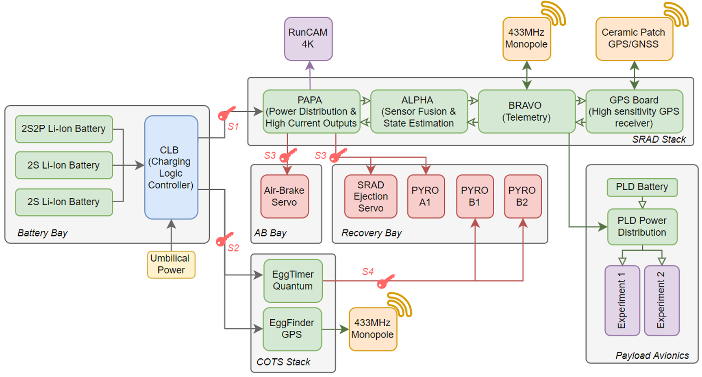
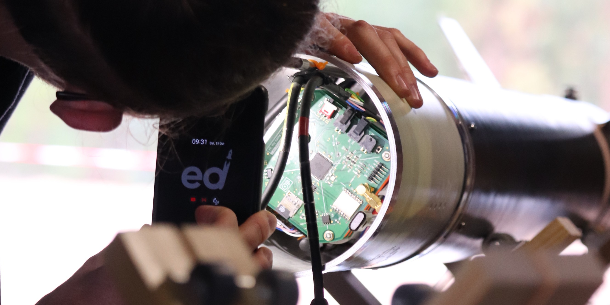
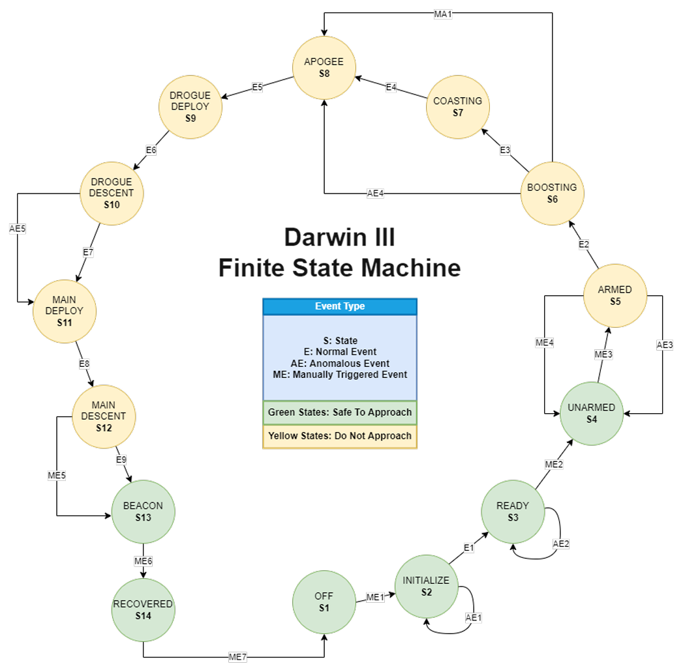

SRAD Avionics
Endeavour, The University of Edinburgh Student Rocketry Team
My role: Technical Lead and Flight Director

Overview
Darwin III's avionics is a fully student-researched and student-developed (SRAD) system, designed from scratch for the European Rocketry Challenge (EuRoC) 2022. It comprises four integrated avionics domains: a centralised power distribution system, the main SRAD avionics stack, a parallel COTS backup, and an independent payload avionics system. Together they handle power management, state estimation, active airbrake control, recovery event triggering, RF telemetry, GPS tracking, and scientific data acquisition.
A key design priority was parallel independence between the SRAD and COTS systems. The SRAD flight computer (Alpha) and the COTS EggTimer Quantum operate in parallel on the same recovery outputs, separated by hardware safety switches. A failure in either system cannot propagate to prevent the other from firing the recovery charges.
System Architecture
The on-board avionics is divided into four main systems (Figure 2.32), each with distinct power feeds and software authority. All electrical schematics are presented in Appendix I of the technical report.

- 1.Centralised Power Distribution. A Charging Logic Board (CLB) accepts 60 W (12 V, 5 A) external DC power from the EuRoC generator on the launch pad and switches the entire avionics bay from EXTERNAL to INTERNAL power. Three separate SRAD battery packs connect to the CLB, with all power routing managed through MOSFET switching controlled by Alpha.
- 2.Main SRAD Avionics. Three custom boards (Papa, Alpha, Bravo) plus a GPS carrier board, stacked vertically in the avionics bay. Responsible for flight state estimation, airbrake control, recovery event triggering, and downlink telemetry.
- 3.COTS Avionics. EggTimer Quantum flight computer and EggFinder GPS (both from EggTimer Rocketry), with an independent 433 MHz antenna and 2S Li-Ion battery. Forms the redundant recovery system; S4 switch isolates it from the SRAD recovery outputs.
- 4.Payload Avionics. Housed within the 2U CubeSat payload bay. Features an independent power distribution board fed by a dedicated LiPo; dormant until signalled by the SRAD avionics stack to conserve power on the pad.
Power System and Safety Switches
The batteries are SRAD-fabricated Li-Ion packs built from LG MJ1 18650 cells, offering 3500 mAh capacity at 3.7 V nominal. A 2S2P pack (7 Ah, 7.4 V nominal) powers the SRAD stack; two separate 2S packs (3.5 Ah, 7.4 V) power the COTS flight computers and the RunCam Split 4K camera. All packs include cell-balancing circuits (Battery Management Systems) and are reverse-polarity and over-voltage protected via ideal diodes.
Four Schurter 0033.4601 safety interlock switches are accessible through 5 mm perforations in the avionics bay tube — the same openings that serve as pressure equalisation ports for the barometers. Switches S1 and S2 enable power to the SRAD Stack and COTS Stack respectively; S3 and S4 disconnect the Recovery Bay high-current pyrotechnic outputs. This configuration keeps the SRAD and COTS systems completely parallel and independent: a failure in any single switch cannot cause mission failure.
The SRAD Stack
The SRAD Stack comprises three main boards and one satellite board, all custom-designed and assembled by the team.
Papa — Power Distribution
Papa is the base board of the stack, fed directly from the Power Routing Board (12 V umbilical or 8.4 V internal). It steps down to 6 V for the airbrake and recovery servo-motors, and 5 V for Alpha and Bravo. Power conversion is handled by buck converters based on the MP2307DN-LF IC, shielded inside 25×30 mm tin insulator covers to minimise EMI. Laboratory tests confirmed voltage ripple below 50 mV (peak to peak) at 2 A load. Papa's high-current outputs:
- →3× Servo outputs (6 V, 3 A max each, 3 A total)
- →2× Pyro outputs (8.4 V, 800 mA continuous, 3 A peak for 10 ms)
- →1× Digital out (5 V, 800 mA, used to switch camera power)
Alpha — Sensor Fusion and State Estimation
Alpha sits above Papa and receives regulated 5 V from it. It is the flight-critical computation board, hosting a PJRC Teensy 4.1 development board running at 600 MHz (ARM Cortex-M7). Alpha reads twin redundant barometers (MS5611) and twin redundant accelerometers (LIS331HH) via SPI/I2C buses, fuses the outputs through a Kalman filter, and maintains a continuous estimate of vehicle speed, altitude, and heading. This data is used to identify transitions between the 14 mission states defined in the state machine. Alpha also controls the gates of the high-power MosFETs on Papa via vertical interconnects, giving it authority over all servo and pyrotechnic outputs.
Bravo — Telemetry
Bravo sits at the top of the stack and handles all RF telemetry tasks. It is connected to Alpha via a UART link. Upon receiving GPS coordinates from the GPS Board, Bravo packages them together with vehicle status received from Alpha and transmits the packet to the ground station via a 433 MHz LoRa link at 20 dB (100 mW). Bravo is based on an ATmega2560 microcontroller, with an RFM96 LoRa module, on-board FLASH, microSD card logger, and a GPS carrier connector.
Sensors
Sensor redundancy is achieved by fitting twin instances of each inertial and pressure sensor on Alpha, with the Kalman filter continuously fusing and cross-checking their outputs.
LIS331HH Accelerometer ×2
| Axes | 3-axis (X, Y, Z) |
| Range | Adjustable, set to 24 g |
| Resolution | 16-bit |
| Interface | SPI, I2C |
MS5611 Barometer ×2
| Range | 10 mbar – 1200 mbar |
| Alt. equivalent | 30 km to −1.5 km ALS |
| Resolution | 24-bit (0.1 m equivalent) |
| Interface | SPI, I2C |
Airbrake Control System
During coasting, Alpha runs a real-time apogee prediction algorithm to determine whether airbrake deployment is required to trim the trajectory toward the 9,000 m target. The algorithm models the rocket as a 2D projectile subject to a drag force and numerically solves the resulting system of non-linear ODEs using a fourth-order Runge-Kutta integrator with a 0.5-second timestep. The Teensy 4.1 at 600 MHz can produce a predicted apogee value in under half a millisecond.
Airbrakes are not deployed until the vehicle has dropped below supersonic speed. When the algorithm confirms five independent times that the rocket will overshoot the target by more than 100 m, the flight computer begins calculating how long to hold the airbrakes open. It starts from a minimum opening time (closing when speed drops below 190 m/s), stepping down by 10 m/s until the correction is sufficient.

Finite State Machine
The flight software is organised around a 14-state Finite State Machine (FSM). Three classes of event drive state transitions: Nominal Events (Ex), triggered by detection of flight milestones; Anomalous Events (AEx), triggered when the vehicle deviates from the expected trajectory or a system fault is detected; and Manual Events (MEx), triggered by ground operators via hardware switches or radio commands through the ground station.

The 14 states and their nominal transitions:
- S1Off: System unpowered.
- S2Initialise: Boot sequence, sensor self-test, baseline calibration against launch-site conditions.
- S3Ready: All systems nominal; vehicle awaiting arm command.
- S4Unarmed: Pyrotechnic outputs disabled; safe for personnel to approach. Transitioned by manual command.
- S5Armed: Pyro outputs enabled; range cleared. Vehicle awaiting ignition detection.
- S6Boosting: Liftoff detected (positive acceleration). Motor burn phase; datalogging and telemetry active at full rate.
- S7Coasting: Motor burnout detected (t+6.34 s). Airbrake deployment algorithm active; apogee prediction running at every timestep.
- S8Apogee: Zero vertical velocity detected (t+40.21 s). Airbrakes retract. Nosecone separation command issued to initiate recovery sequence.
- S9Drogue Deploy: Nosecone separation charge fires; drogue parachute ejected at 28 m/s descent.
- S10Drogue Descent: Stable drogue descent; GPS coordinates transmitted continuously.
- S11Main Deploy: 450 m altitude detected (t+188.36 s); Tender Descender fires, deploying main parachute.
- S12Main Descent: Stable main parachute descent to touchdown.
- S13Beacon: Zero vertical velocity detected at ground (t+255.76 s). System enters low-power beacon mode, transmitting last known GPS location at reduced rate.
- S14Recovered: Ground operator confirms recovery via radio command; system powers down.
Flight Outcomes
- →SRAD avionics performed nominally throughout powered ascent and coasting, surviving max-Q at Mach 1.7 without structural or electrical failure.
- →GPS telemetry was suspended above Mach 1.0 per CoCoM export control regulations. A single GPS fix was received after the vehicle exited the supersonic regime, confirming structural integrity through the boost phase.
- →LoRa telemetry was lost at high velocity due to ground station antenna tracking limitations at the high angular rates seen during supersonic ascent. Increasing transmission power and improving antenna tracking were identified as primary improvement areas.
- →Recovery failure was a mechanical fault: the nosecone failed to separate at apogee, preventing the drogue ejection condition from being met. The avionics correctly detected apogee and issued the separation command; the command was not executed due to a mechanical failure in the separation mechanism.
- →The FLASH chip from the COTS EggTimer Quantum FC was recovered from the impact site in good condition, with data recovery attempted upon return to Edinburgh.